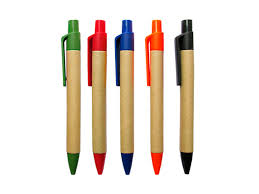

Ofrecemos productos de papelería ecológica que cuidan el medio ambiente.
Visión: Ser reconocidos como líderes en la promoción de prácticas sostenibles mediante la fabricación y distribución de lapiceros ecológicos que inspiren a personas y empresas a adoptar un estilo de vida y un entorno más respetuoso con el medio ambiente. Misión: Fabricar lapiceros ecológicos de alta calidad utilizando materiales sostenibles y procesos responsables, promoviendo la conciencia ambiental y ofreciendo soluciones prácticas que reduzcan el impacto negativo en el planeta..
Explore nuestra variedad de lapiceros ecológicos, diseñados para brindar calidad y respeto al medio ambiente.
Ofrecemos una gama de servicios diseñados para promover la sostenibilidad y el uso de productos ecológicos.
Consultoría en sostenibilidad ambiental y la implementación de prácticas ecológicas en tu empresa.
Asesoramiento sobre productos ecológicos y su impacto en el medio ambiente.
Diseño personalizado de productos ecológicos, como lapiceros biodegradables para tu empresa.
Capacitación y talleres sobre sostenibilidad para empleados y empresas.
¿Tienes alguna pregunta o deseas más información? Contáctanos a través de nuestro formulario de contacto.